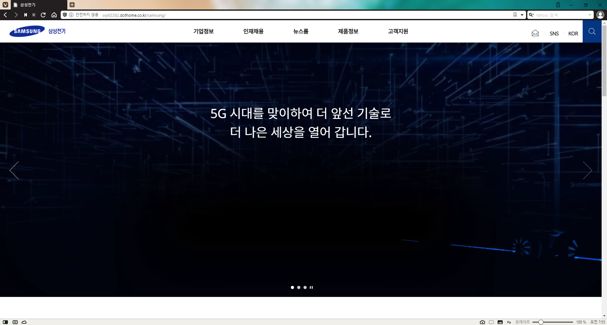
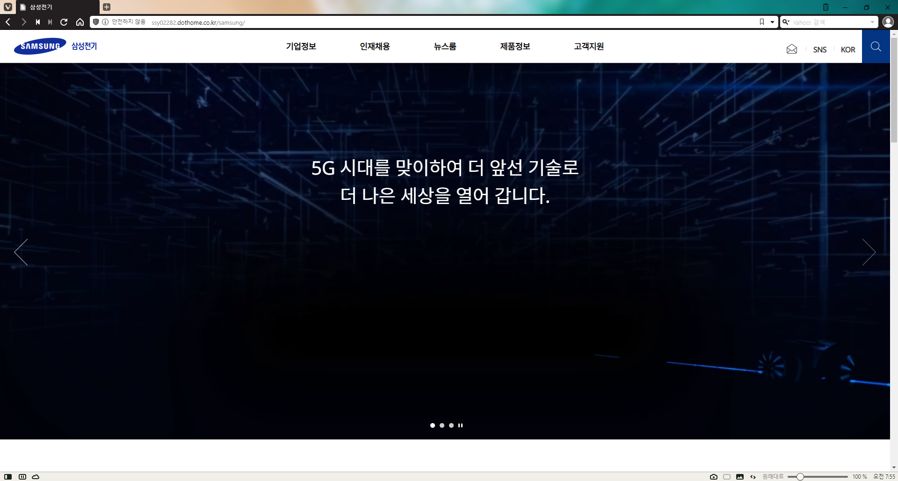

Samsung
Electro-Mechanics
삼성전기
Web Accessibility & Validation Certified
삼성 계열사 삼성전기 리뉴얼 이전의 모습을 클론작업하였습니다.
jQuery를 이용하여 header와 footer를 import하였고,
기타 기능은 Pure Javascript로 작업했습니다.
Cross Browsing

 

| Testing Environment | Window 11 (x64) |
|---|---|
| Test Browser | Chrome |
| Edge | |
| FireFox | |
| Opera | |
| Wale | |
| Vivaldi | |
| Except Browser | below IE 11 |
| Safari (latest update 2012) |
Web Accessibility
Web Validation


LocknLock
Web Accessibility & Validation Certified
also Flexible index
주방용기 전문기업 LocknLock의 본사 한국어웹 화면을 클론작업하였습니다.
Main page는 CSS3에서 @media와 Flex를 이용하여 사이즈별로 반응할
수 있도록 했으나
서브페이지는 각각 Fixed page 입니다.
Main page의 경우 Mobile부터 PC까지 대응 가능합니다.
Cross Browsing
| Testing Environment | Window 11 (x64) |
|---|---|
| Test Browser | Chrome |
| Edge | |
| FireFox | |
| Opera | |
| Wale | |
| Vivaldi | |
| Except Browser | below IE 11 |
| Safari (latest update 2012) |
Web Accessibility
Web Validation

미니멀라이프를
완성하다
Process for Project Application
팀 기획으로 시작하여 디자인 작업에서는 팀원과 협업하여 진행하였습니다.
코딩부터는 개인 작업으로 진행하였으며, 기능은 전체 Pure Javascript로 작업했습니다.
| Planning | Group |
|---|---|
| Design | Cooperated |
| Coding | Individually |
Kakao Talk
Individual React App project
카카오톡의 n년 전 디자인을 이용하여 작업했습니다.
진행 중 사용한 스펙은 상기와 같습니다.
| Version | React 18 |
|---|---|
| React-router-dom v6 | |
| Used Module | react-router-dom |
| Axios | |
| classNames | |
| Used Tool | git |
| github | |
| Sourcetree |